한 달 PR 1,000개와 신뢰 곡선
한 달에 PR 1,000개
영상은 숫자로 시작해요. 왼쪽 1,000은 로렌 탄 한 사람이 한 달에 머지한 PR이고, 오른쪽은 그다음 달 12일 만에 머지한 PR이에요. 코드는 에이전트가 짜고 머지도 에이전트가 해요. 본인은 아침에 일어나 main에 이미 들어간 걸 훑어봐요.
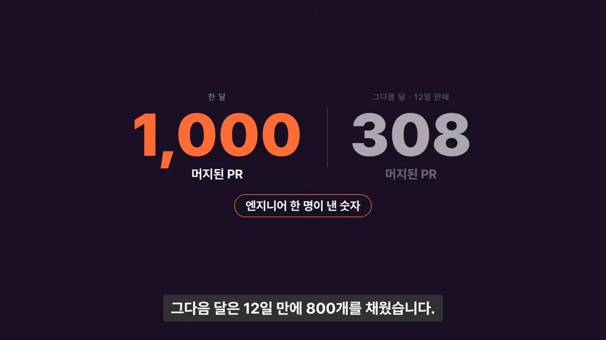
여기서 드는 의문은 '그 코드, 믿을 수 있나'예요. 로렌 탄도 그 의심이 당연하다고 먼저 인정해요. 강의는 에이전트를 어떻게 믿게 됐는지 한 시간에 걸쳐 단계별로 풀어요. 영상은 그걸 아래 네 덩어리로 묶어서 따라가요. 에이전트에게 일을 맡기고도 출력을 하나하나 들여다보고 있다면 필요한 내용이라고 해요.
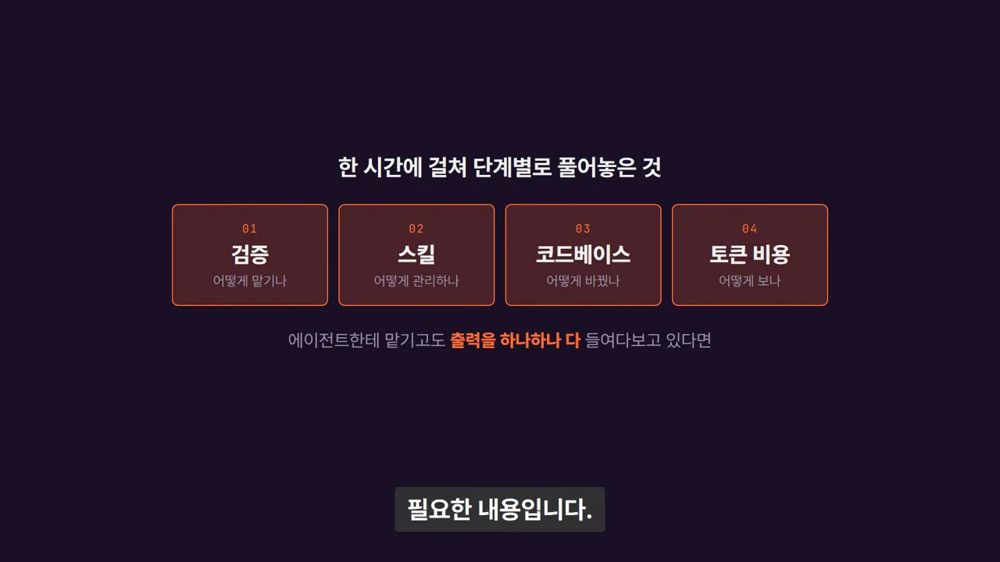
개발자와 매니저를 두 번 오간 사람
로렌 탄의 이력은 화면 오른쪽 줄과 같아요. 2016~2020년 Netflix에서 개발자로 시작해 엔지니어링 매니저가 됐고, 2020~2026년 Meta 리액트 팀에서 6년을 보냈어요. React 18 때는 그 팀의 매니저였고, 그 뒤 다시 개발자로 돌아가 리액트 컴파일러 제작과 오픈소스 공개를 이끌었어요. 2026년 3월 Cursor에 합류해 Cursor 3와 GrokBot 출시에 참여했어요.
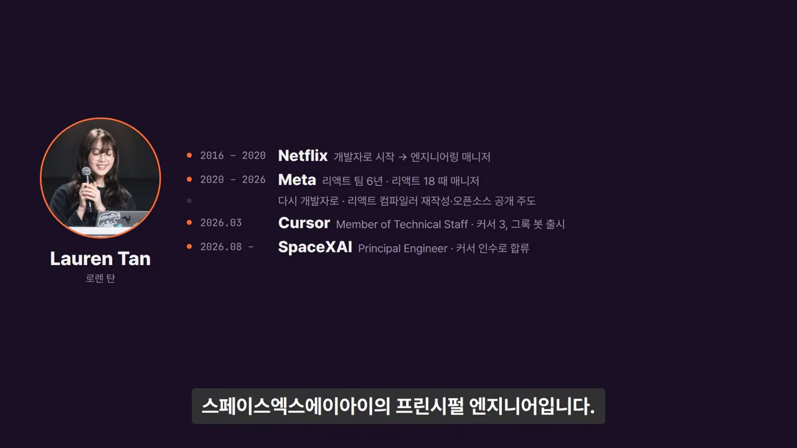
개발자와 매니저 사이를 두 번 오간 경험이 이야기의 출발점이에요. 팀원을 못 믿는 매니저는 어깨너머로 지켜보고, 하나하나 확인하고, 하나하나 지시해요. 그러면 팀이 아무리 커도 속도는 매니저 한 사람에게 묶여요. 화면 아래 빨간 상자대로, 에이전트를 쓰는 개발자가 정확히 이 상태라는 거예요.
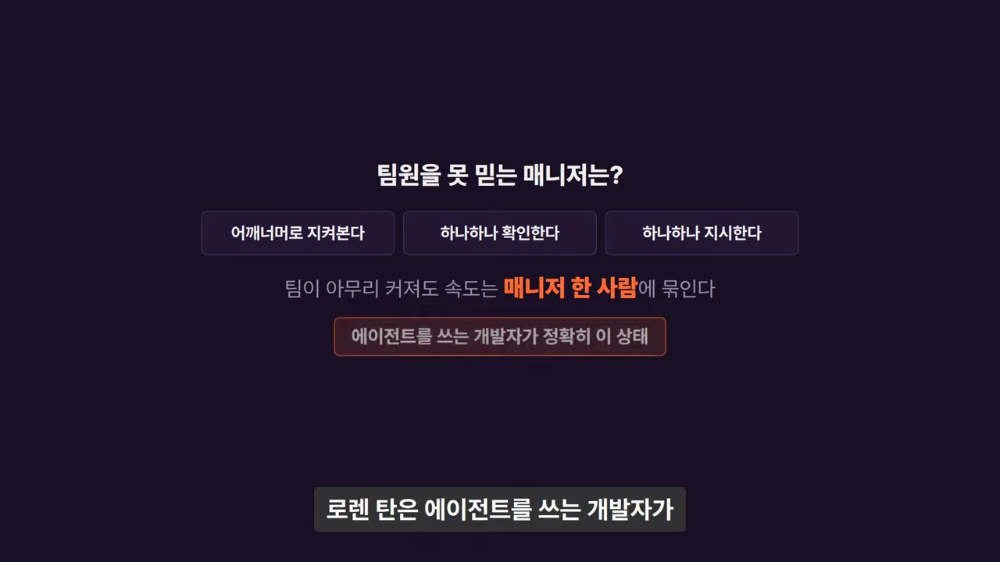
신뢰 곡선
그래서 그래프를 하나 그려요. 가로축은 에이전트 수, 세로축은 신뢰예요. 오른쪽으로 가려면 신뢰가 먼저 올라가야 해요. 왼쪽 아래 메모처럼 다섯 달 전 로렌 탄은 이 그래프의 맨 왼쪽에 있었어요.
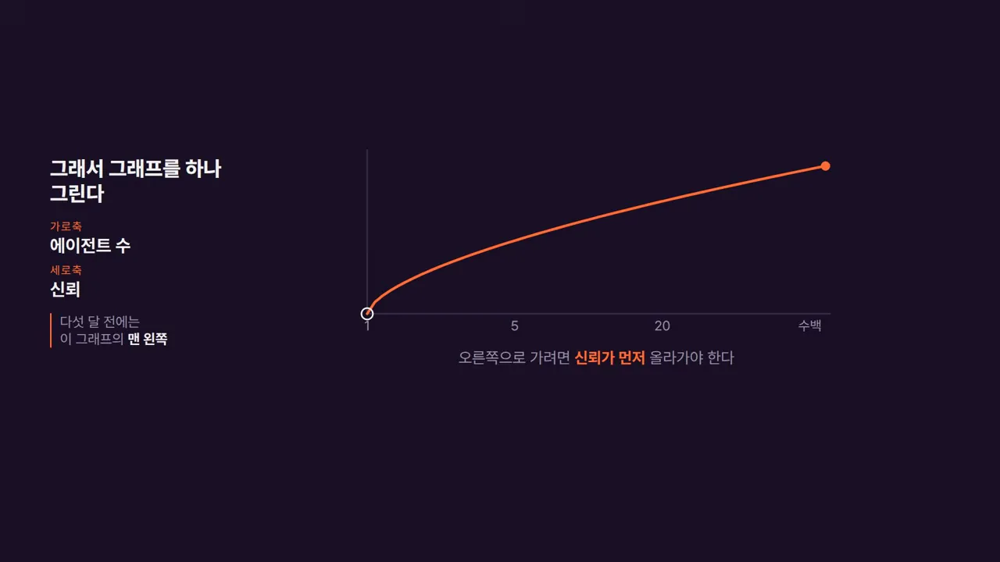
강의 화면에서는 같은 곡선을 손으로 그려요. 가로축 눈금이 1, 1~5, 5~10, 10~20, 수백, 수천이에요. 왼쪽 구간에서는 에이전트 몇 개를 붙들고 출력을 하나하나 보며 프롬프트를 쳐요. 하나를 못 믿으니 백 개를 띄울 수 없어요. 지금 로렌 탄은 곡선의 오른쪽에 있고, 에이전트가 PR을 자동으로 머지해요.
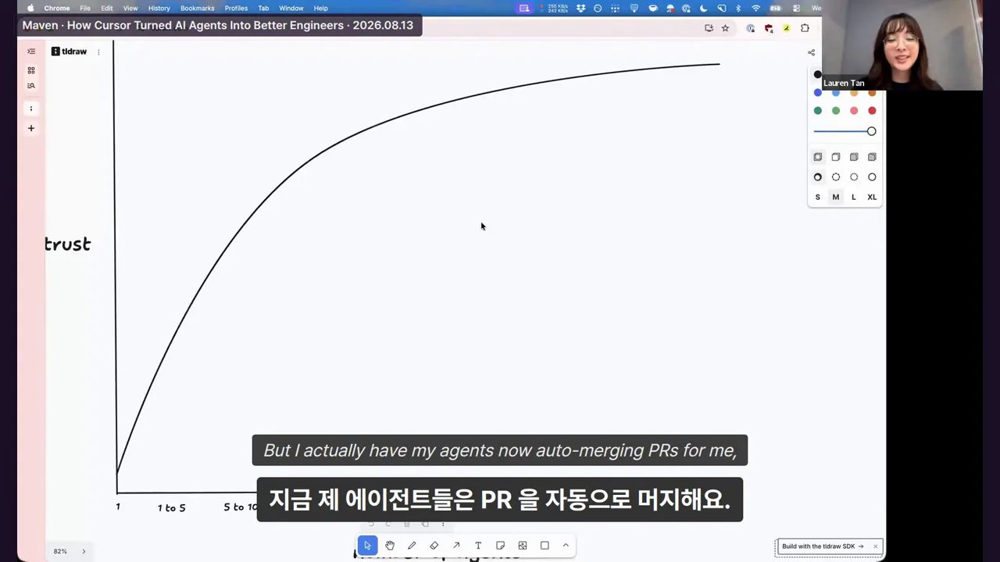
You can't go to a 100 agents … when you don't even trust the output of one agent.
에이전트 하나가 내놓은 결과도 못 믿으면서 백 개로 갈 수는 없어요.
— 원래 강의 (이 영상 01:23 부근)
가장 중요한 스킬은 검증
도구함에 꼭 있어야 하는 걸 하나만 꼽으라면, 로렌 탄의 답은 정해져 있어요. 강의 화면의 손글씨 메모 'how do i trust my agents more?' 아래에 세 가지가 적혀 있어요. 검증(verification), 에이전트가 진짜 엔지니어처럼 일하게 가르치는 좋은 스킬(예: pstack), 에이전트 친화적인 구조로 리팩터링하거나 다시 쓰기(그린필드 vs 브라운필드)예요. 이 영상의 나머지가 이 세 줄을 차례로 풀어요.
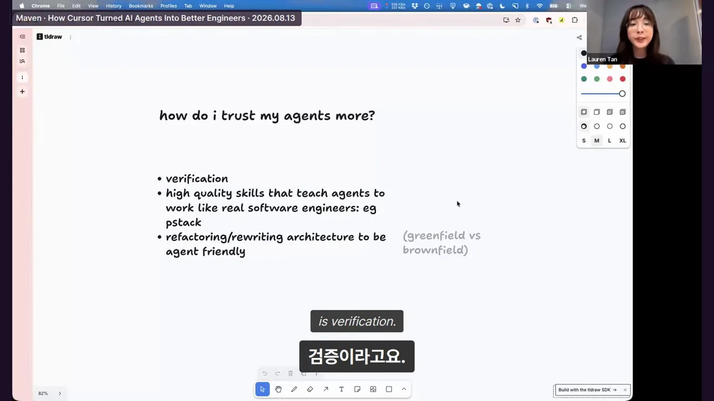
검증은 실제로 돌려 보는 능력
검증이란 에이전트가 코드를 실제로 돌려 보는 능력이에요. 화면의 세 단어가 예시예요. CPU(Central Processing Unit) 트레이스와 힙 스냅샷은 앱이 실제로 돌 때 시간과 메모리를 어디에 쓰는지 찍어 둔 기록이고, iOS 시뮬레이터는 휴대폰 앱을 띄워 보는 도구예요. 사용자가 앱을 쓰는 방식 그대로 에이전트도 쓸 수 있어야 루프가 닫혀요.
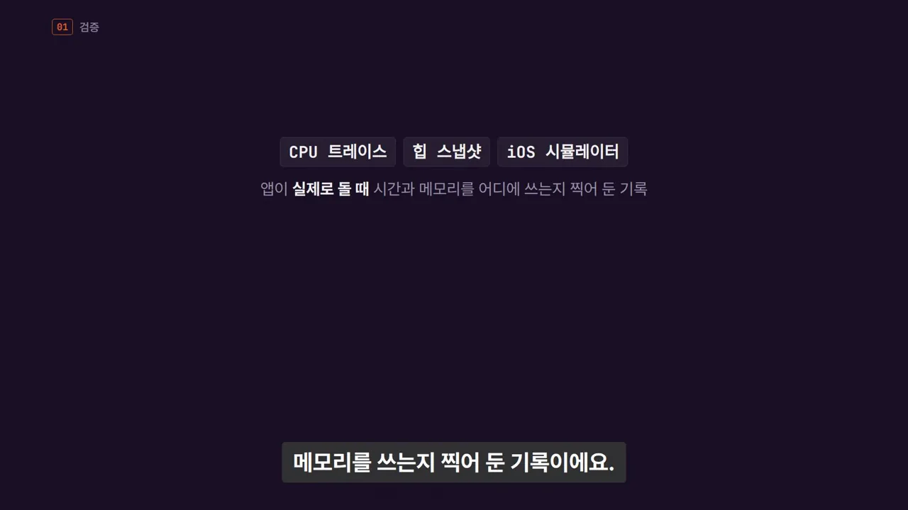
영상은 여기서 선을 하나 그어요. 검증이 보장하는 건 '좋은 코드'까지가 아니라 '맞게 동작하는 코드'까지예요. 좋은 코드는 누가 보장하느냐는 질문은 뒤의 코드베이스 단계(6~8절)에서 다시 나와요.
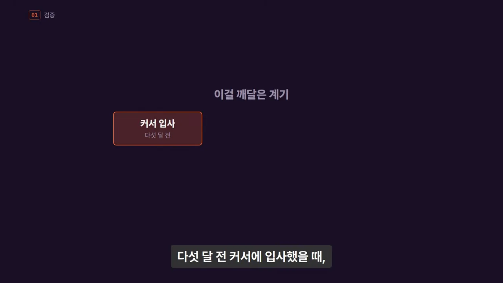
입사 첫 주의 성능 문제
이걸 깨달은 계기는 다섯 달 전 Cursor 입사예요. 화면의 세 칸대로, 원래는 클라우드 에이전트 팀으로 가기로 했는데 리액트 경험 때문에 출시를 앞둔 에이전트 창 팀으로 배치됐어요. 성능 문제가 본인에게 떨어졌어요.
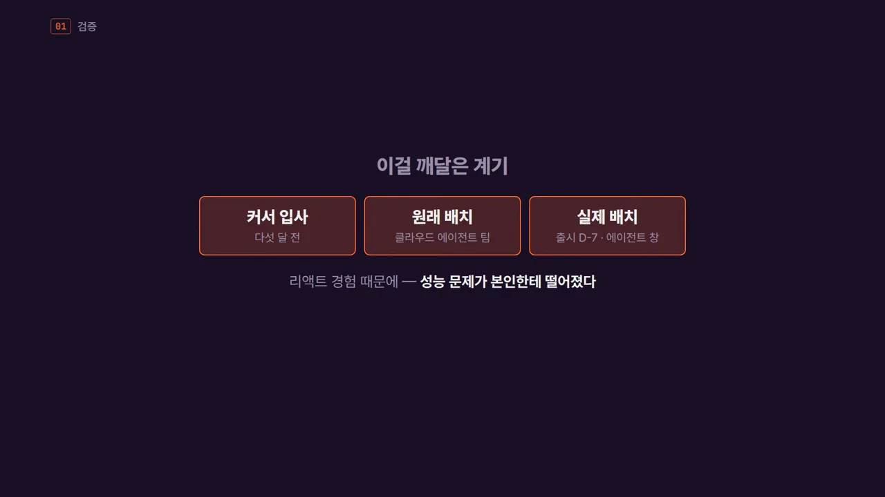
처음엔 Chrome DevTools로 트레이스를 떠서 플레임 그래프를 직접 봤어요. 에이전트도 모르긴 마찬가지였어요. 트리 스크린샷이나 트레이스 파일을 넘기면 '이거 같다'고 자신 있게 말했지만, 고쳐 보면 원인이 아니었어요. 검증 스킬이 없으면 사람이 검증자이자 병목이에요. 에이전트가 코드를 쓰면 내가 개발 빌드를 열어 보고, 안 되면 스크린샷이나 콘솔 에러를 복사해 넘겨야 하니 병렬로 늘릴 수가 없어요.
첫 스킬, Control Glass
그래서 처음 만든 스킬이 Control Glass예요. 화면은 그 SKILL.md예요. 제목 아래 설명대로 실행 중인 Cursor 개발 빌드를 CDP(Chrome DevTools Protocol)로 조종해요. DOM(Document Object Model)을 살펴보고, 스크린샷을 찍고, 클릭하고, 타이핑하고, CPU와 네트워크를 제한하고, 콘솔과 네트워크 출력을 받아요.
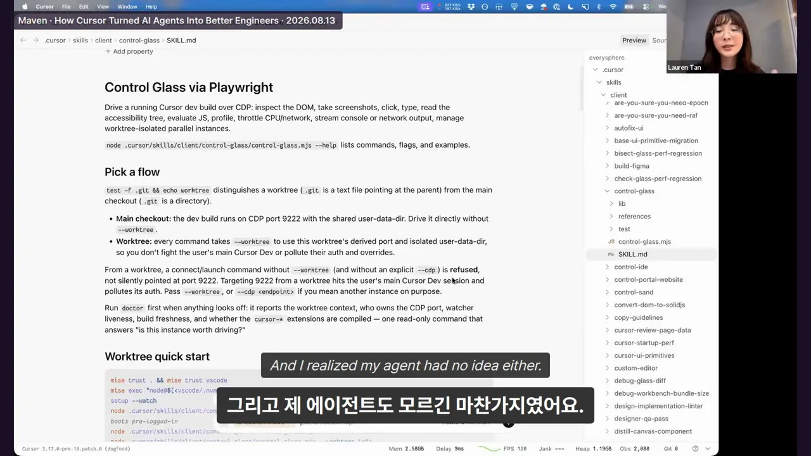
로렌 탄은 스킬 코드 자체는 그리 특별하지 않아서 에이전트가 쉽게 만들어 준다고 해요. 웹이나 일렉트론 앱이면 CDP를, iOS 앱이면 애플이 주는 시뮬레이터 도구를 쓰는 법을 에이전트에게 가르치면 돼요.
피처 맵과 pstack
Control Glass 이야기에 나온 말 세 개부터 정리해요. 영상 해설이 화면에 따로 짚어 줘요. Glass는 Cursor 에이전트 창의 내부 코드명, Chrome DevTools Protocol은 브라우저를 코드로 제어하는 통로, Electron은 데스크톱 앱인데 속은 크롬이라 같은 방법이 통하는 프레임워크예요.
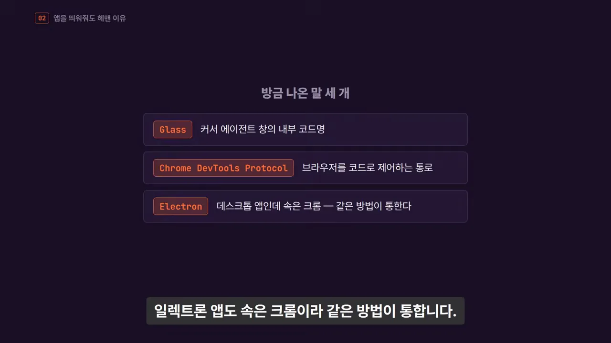
앱을 띄워도 에이전트가 헤맨 이유
그런데 이걸로 끝나지 않았어요. 이제 앱은 띄울 수 있는데, '왼쪽 사이드바가 버벅여요' 같은 제보가 오면 에이전트가 헤맸어요.
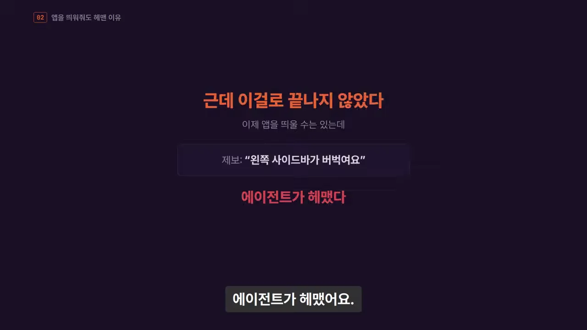
몰랐던 건 두 가지예요. 사이드바가 코드 어디에 있는지, 화면에서 거기까지 어떻게 가는지. 그래서 개발 빌드를 띄워 놓고 이것저것 눌러보기만 했어요.
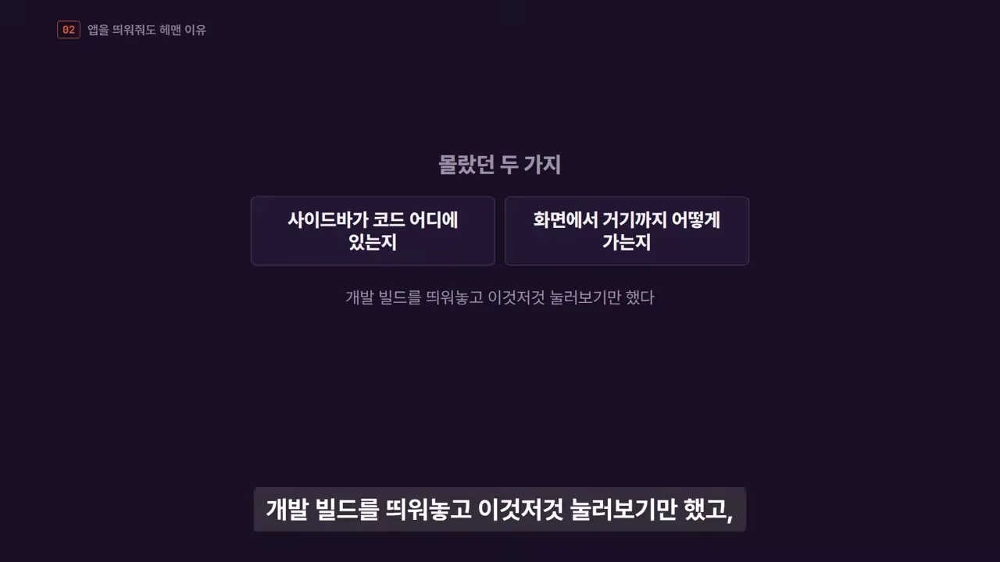
피처 맵: 기능까지 가는 길을 적은 파일
피처 맵은 앱의 모든 기능에 어떻게 가는지 에이전트에게 알려 주는 파일이에요. 아래 화면은 그 README.md의 'Driving conventions' 부분이에요. 접근성 라벨과 data-component 같은 속성을 우선 쓰고, 클래스 선택자는 대비책으로만 쓰라는 식의 조작 규칙이 적혀 있어요.
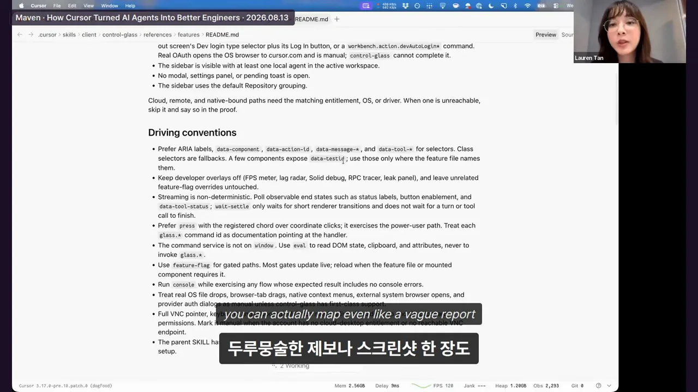
기능 하나의 항목은 이렇게 생겼어요. 사이드바 파일의 'How to get to it (user POV)' 부분은 사용자 입장에서 사이드바를 여닫고, 크기를 바꾸고, 메뉴를 여는 길을 단축키까지 적어 둬요. 로렌 탄은 하위 기능 목록과 CDP로 고를 때 쓰는 DOM 속성까지 다 들어 있다고 해요.
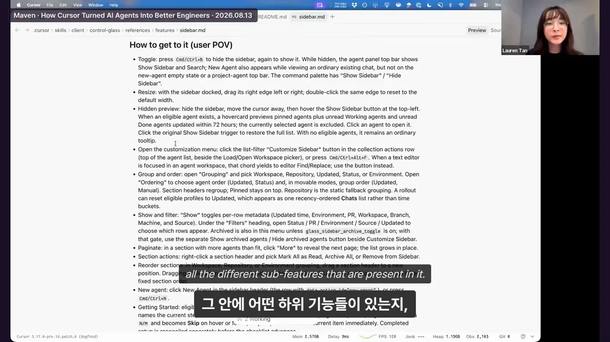
pstack
이 피처 맵 초안을 만들어 주는 게 로렌 탄의 플러그인 pstack이에요. 그 안의 검증 스킬 생성 기능이 코드를 탐색해 초기 피처 맵을 쌓아 줘요. 영상 해설은 이름의 사연도 소개해요. Y Combinator 대표 게리 탄의 스킬 모음 이름이 gstack인데, 성이 같아서(서로 아무 관계 없음) 장난삼아 자기 별명 poteto의 p를 붙였다는 거예요.
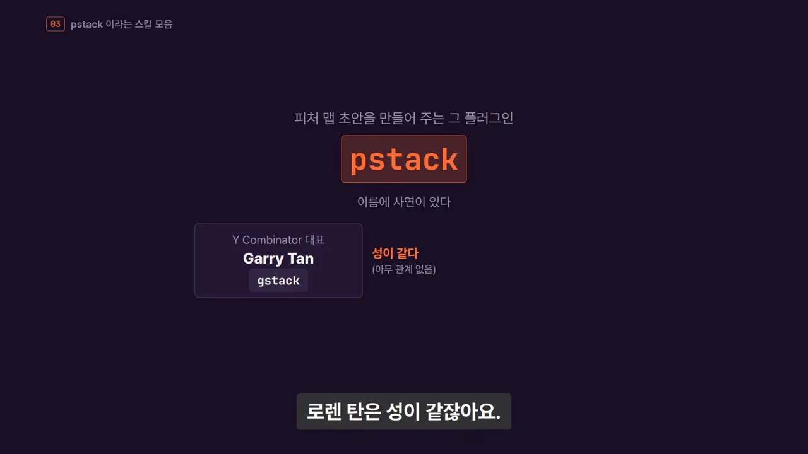
해설은 본인 링크드인 글도 보여 줘요. 형광으로 칠한 부분이 '지난주 엔지니어링 팀에서 1만 번 쓰였다'예요. 그래서 오픈소스로 공개한다는 내용이에요.
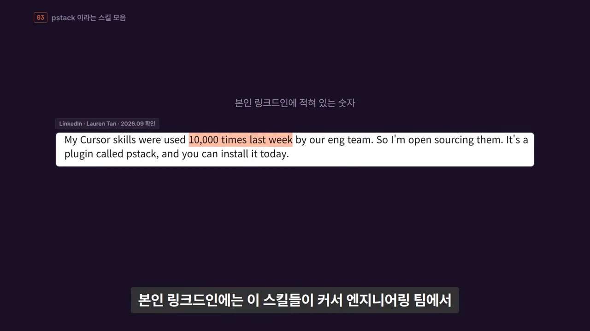
스킬은 실패를 보고 만들고, eval로 지켜요
pstack은 처음부터 설계한 물건이 아니에요. 에이전트 옆에 붙어서 하나하나 지적하던 시절에서 나왔어요. 버그 리포트를 주면 에이전트가 '이거다'라고 자신 있게 말했는데, 도구 호출 기록을 보니 정작 관련 코드는 읽지도 않았어요. 완전히 환각을 본 거예요. 그때부터 이 에이전트를 못 믿겠다는 생각이 들었다고 해요.
5초 전에 입사한 엔지니어에게 주듯
여기서 로렌 탄은 다시 매니저 비유를 꺼내요. 코딩 실력은 좋은데 비즈니스 맥락은 전혀 없는, 5초 전에 온보딩한 엔지니어를 어떻게 일 잘하게 만들까요. 답은 스킬이에요. 스킬은 그냥 마크다운이지만 지시와 맥락을 많이 담을 수 있어요. 모델은 다음 토큰을 예측하니까 좋은 토큰을 먼저 주면 더 똑똑한 쪽으로 패턴을 맞춘다는 설명이에요. 트위터에서는 이걸 '에이전트를 다른 잠재 공간으로 끌어당긴다'고 부르기도 한대요.
그래서 pstack은 아주 조금씩 쌓였어요. 에이전트가 실패하는 방식을 관찰할 때마다 그걸 스킬로 만들었어요. '환각하지 말고 직접 찾아보고 코드를 읽어라, 서브에이전트를 많이 써라, 추측은 그만'처럼요.
eval은 스킬의 유닛 테스트
제품은 계속 바뀌는데 스킬은 어떻게 최신으로 유지할까요. 진행자의 이 질문에 대한 답이 eval이에요. 강의 화면의 메모에 'how to trust?'와 'evals!'가 새로 붙었어요.
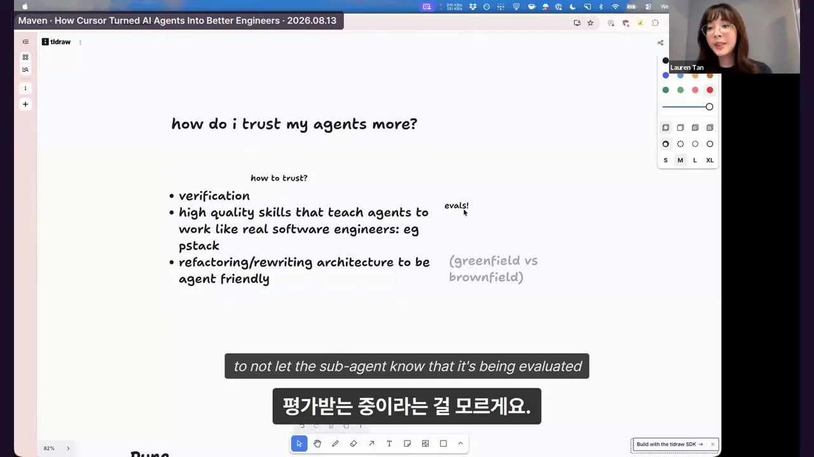
pstack의 poteto-mode에는 eval 플레이북이 있어요. 순서는 이래요.
- 조정 에이전트가 루브릭을 만들어요 — 이 스킬이 무엇을 해야 하는지 채점 기준을 정해요.
- 서브에이전트를 여러 개 띄워요 — 각자 디렉터리에서 일하는데, 디렉터리 이름은 평가 중이라는 걸 눈치채지 못하게 지어요. 에이전트는 평가받는 걸 알면 행동을 바꾸거든요.
- 여러 모델에서 돌려요 — Cursor는 여러 모델을 지원해서, 내가 쓰는 모델들마다 스킬이 얼마나 잘 먹히는지 볼 수 있어요.
- 스킬을 고칠 때마다 다시 돌려요 고친 스킬이 정말 원하는 결과로 이어지는지 확인돼요
다만 스킬 관리는 어렵고 안목과 관찰이 많이 필요하다고 해요. 짝 프로그래밍에서 옆 사람에게 '왜 이렇게 안 했어?'를 계속 묻는 뒷좌석 운전자가 돼야 해요. 처음 스킬을 쌓을 때는 운전석에 앉아 도구 호출과 코드, 에이전트의 사고 과정까지 다 읽어야 어디서 실패하는지 보이고, 그 자리에 스킬을 만들면 돼요.
그 검증은 어떻게 믿나
진행자 질문이 하나 더 있어요. 그렇게 만든 검증 자체는 어떻게 믿느냐는 거예요.
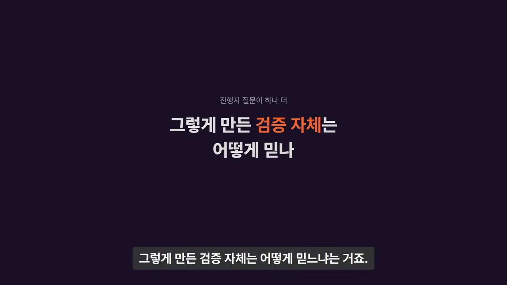
eval은 점수를 내니까 점수를 끌어올릴(힐 클라이밍) 수 있어요. 조정 에이전트가 점수를 매기고, 다른 모델을 심판으로 붙여 첫 모델이 편향되지 않았는지 교차 확인해요. 그리고 Cursor의 /loop로 '모두 10점 만점이 될 때까지 이 eval을 계속 돌려'라고 시켜요. Control Glass 스킬도 이렇게 거의 손 안 대고 만들었지만, 처음에는 반복이 아주 많이 필요했다고 해요.
로컬에서 클라우드로: 버그를 재현하는 Benny
그럼 이런 검증 체계는 어디서부터 만들까요. 로컬, 내 컴퓨터예요. 에이전트가 앱을 어떻게 다루는지 눈으로 볼 수 있으니까요. 그렇게 로컬에서 믿을 만해진 스킬을 클라우드로 가져가요. 화면 아래 '나 한 사람'은 로컬 단계의 범위예요. 클라우드로 가면 나 한 사람이 아니라 팀 전체가 같은 스킬을 써요.
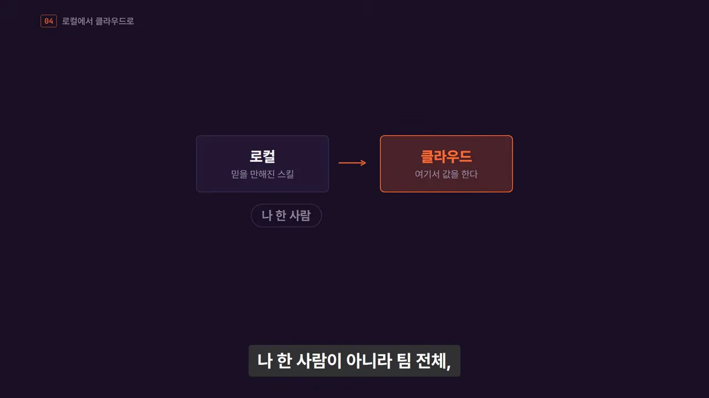
버그를 스스로 재현하는 Benny
Cursor에는 버그 제보가 올라오면 알아서 움직이는 클라우드 에이전트가 있고, 이름은 Benny예요. 제보를 받으면 클라우드에서 자기 데스크톱을 열고, 그 안에서 Cursor를 실행해 같은 컨트롤 스킬로 버그를 재현해요. 아래 Slack 스레드의 첫 줄이 Benny의 보고 'Reproduced but already fixed on main'이에요. 버그는 재현됐지만 main에서는 이미 고쳐졌다는 뜻이고, 그 아래 화면 녹화가 붙어 있어요.
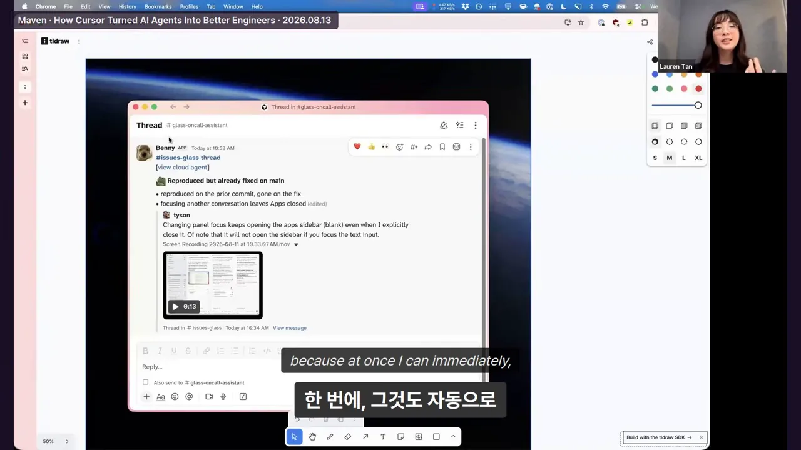
로렌 탄은 이게 자기만이 아니라 팀 전체, 회사 전체에 도움이 된다고 해요. 다만 여기까지 오기까지는 여정이 있었어요. 아직 신뢰 곡선의 왼쪽 구간에 있으면서 클라우드 에이전트를 수천 개 띄우면 토큰만 낭비되고 비용이 어마어마해진다고 경고해요. 1절의 그래프에서 오른쪽으로 건너뛰지 말라는 얘기예요.
이번엔 코드베이스: 다시 쓸 것인가
여기까지는 에이전트를 가르치는 쪽이었어요. 검증할 수단을 주고, 스킬로 가르치고, eval로 확인했어요. 마지막 항목은 코드베이스 쪽이에요. 에이전트가 일하기 좋게 코드를 다시 짜는 거예요.
'Rewrite는 하지 마라'의 반대편
개발자라면 'rewrite는 하지 마라'는 말이 바로 떠올라요. 회사에 들어가 코드베이스를 보고 '누가 이렇게 짰어, 다 다시 쓰고 싶다'는 마음은 흔하고, 보통은 말리죠. 로렌 탄은 그 통념의 반대편에 서요. 상황에 따라 고려할 만하다는 쪽이에요.
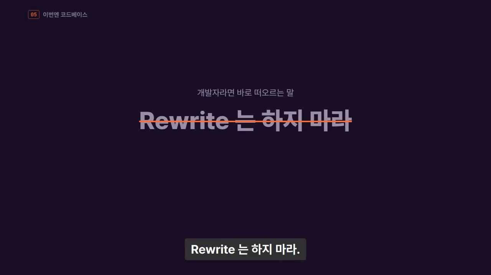
브라운필드는 오히려 형편이 낫다
이미 운영 중인 큰 코드베이스(브라운필드)는 잘 짜여 있다면 오히려 형편이 나은 편이라고 해요. 큰 테크 회사의 문제가 이제 모두의 문제가 됐다는 거예요. Meta에는 거대한 모노레포와 수만 명의 엔지니어가 있었고, 훌륭한 개발자가 많았지만 코드 품질은 생각보다 좋지 않았어요.
Before AI slop, we had human slop.
AI 슬롭 전에 인간 슬롭이 있었어요.
— 원래 강의 (이 영상 18:50 부근)
그래서 Meta나 구글 같은 회사의 인프라는 팀에서 가장 경험이 적은 엔지니어를 기준으로 짜여 있어요. 화면 자막처럼 프레임워크를 만들고, 관례와 가드레일을 두고, 인턴이 운영 DB(Database)를 날리지 못하게 권한을 제한해요. 이런 인프라가 이미 있으면 에이전트도 코드베이스를 크게 망가뜨리지 못하고, 가드레일은 언제든 더할 수 있어요.
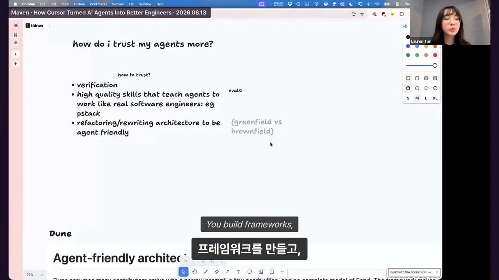
위험한 쪽은 새 프로젝트
그럼 위험한 쪽은 어디일까요. 로렌 탄은 새로 시작하는 프로젝트를 꼽아요. 가장 큰 위험이자 가장 큰 기회라고 해요.
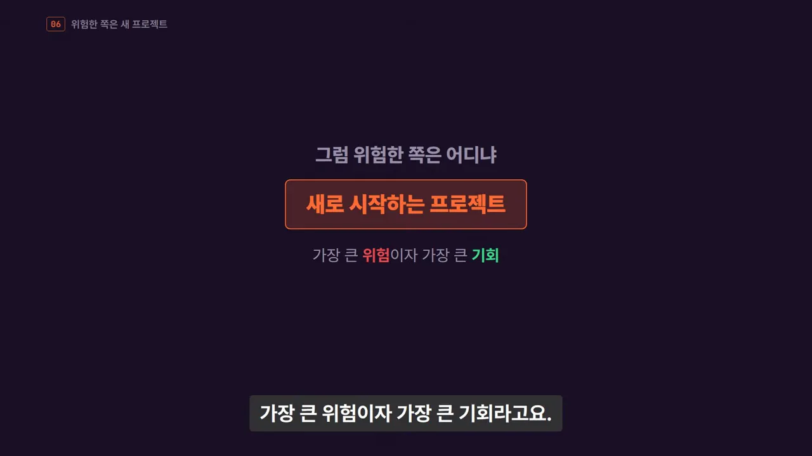
완전히 바이브 코딩한 앱에는 가드레일이 하나도 없어요. 에이전트는 가장 편한 방법으로 문제를 풀고, 시간이 지나면 나도 이해 못 하는 코드베이스가 통제를 벗어나요. 에이전트는 나름 이해하겠지만 지름길에 최적화된 구조라 문제가 많이 생겨요. GrokBot이 딱 그렇게 시작했어요. 프로토타입을 아주 빠르게 바이브 코딩했어요.
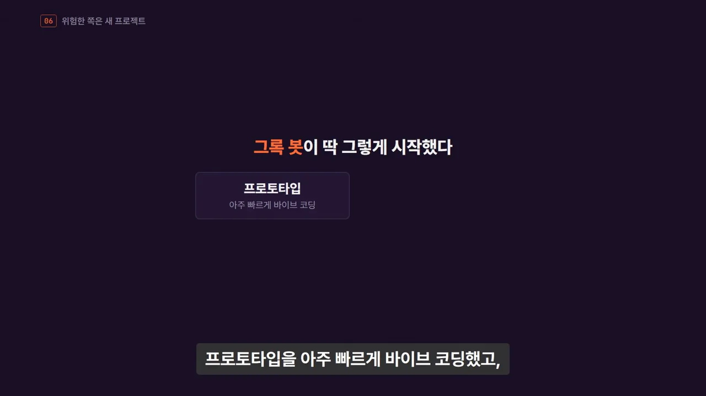
그래서 강한 제약에서 시작하는 게 꼭 필요하다고 해요. 로렌 탄은 GrokBot 전체를 새 아키텍처로 리팩터링하는 데 PR 600개를 썼고, 토큰도 아주 많이 들었어요. 그 덕에 지금은 코드를 거의 안 봐요. 디자이너, PM(Product Manager), GTM(Go-To-Market) 담당자까지 GrokBot에 기능을 넣을 수 있고, 한밤중에 누가 성능을 떨어뜨리는 코드를 머지할까 걱정하지 않아요. CI 제약이 많아서 사람이 코드를 쓰기엔 꽤 짜증 나지만, 그 짜증은 에이전트가 다 흡수해요.
Dune: 화면 속 설계도와 실제 CI
그 새 아키텍처가 어떻게 생겼는지는 강의에서 자세히 나오지 않아요. 화면에 한 쪽짜리 문서 'Agent-friendly architecture'가 잠깐 떠 있었을 뿐이에요. 영상 해설은 이 문서를 직접 읽고 풀어 줘요. 아래 Java 코드는 GrokBot의 코드가 아니라, 이해를 돕기 위해 해설자가 만든 예시예요.
전제와 '계약': 에이전트가 보통 하는 행동
문서의 첫 줄은 전제예요. 형광으로 칠한 부분대로, Dune은 기여자가 좁은 프롬프트 하나와 근처 파일 몇 개만 들고, 전체 그림 없이 도착한다고 가정해요. 그래서 그 아래 'Contract'에 에이전트가 보통 하는 행동 다섯 가지를 적어 둬요.
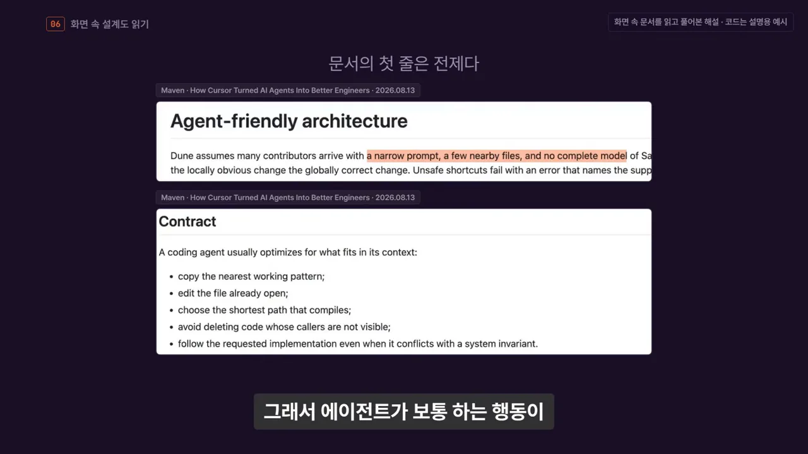
해설은 다섯 행동마다 예시를 붙여요. 첫째 행동의 예시가 아래 화면이에요. 옆 폴더의 온보딩 코드를 그대로 베끼는데, 그게 컨트롤러 안에서 DB를 직접 부르는 코드였다면 나쁜 코드도 그대로 복제돼요.
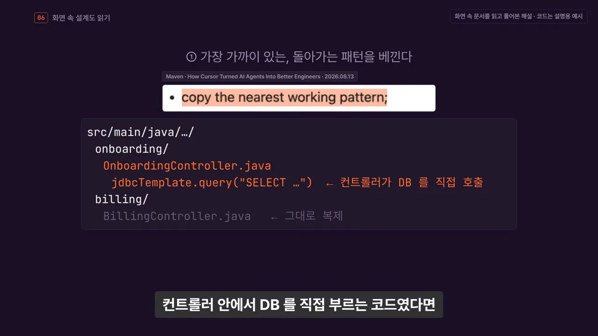
셋째 행동은 '컴파일만 되면 가장 짧은 길'이에요. 타입이 안 맞으면 강제 캐스팅(TypeScript라면 any)으로 덮고, 필요한 걸 남의 패키지 깊숙한 곳에서 바로 가져다 써요. 그래도 빌드는 성공해요.
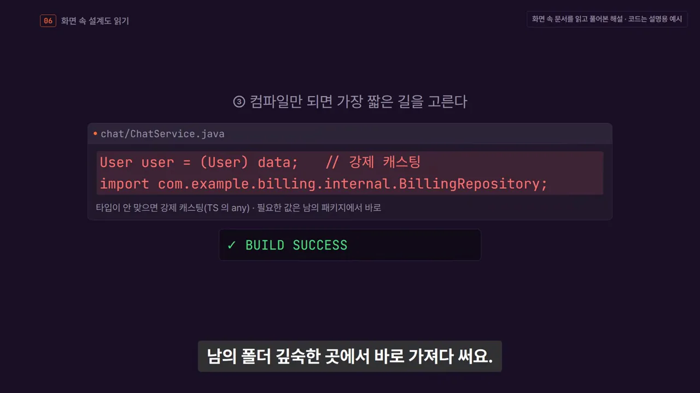
다섯 행동과 해설의 예시를 표로 모았어요.
| 계약(에이전트가 보통 하는 행동) | 해설의 예시 |
|---|---|
| ① 가장 가까운, 돌아가는 패턴을 베낀다 | 컨트롤러에서 DB를 직접 부르는 옆 폴더 코드를 그대로 복제 |
| ② 이미 열려 있는 파일을 고친다 | 채팅 창 파일을 열어 둔 채 내보내기 버튼을 부탁하면 내보내기 로직 40줄이 채팅 창 파일에 들어감 |
| ③ 컴파일만 되면 가장 짧은 길을 고른다 | 강제 캐스팅, 남의 패키지 내부를 바로 import. 그래도 빌드 성공 |
| ④ 누가 쓰는지 안 보이는 코드는 지우지 않는다 | 옛 formatDate는 두고 formatDateV2, V3를 새로 만듦 |
| ⑤ 시스템 전체의 약속과 부딪혀도 시킨 대로 구현한다 | '화면 코드는 파일을 읽지 않는다'는 약속이 있어도 버튼에서 설정 파일을 읽게 함 |
이 문서는 반대로 간다: 다섯 규칙
써 보신 분들은 익숙한 장면이에요. 보통은 이걸 프롬프트로 고치려 해요. '다른 파일도 찾아봐', '안 쓰는 코드는 지워'처럼요. 이 문서는 반대로 가요. 형광 부분대로 '이 행동들은 설계가 예측할 수 있는 입력값'이라고 보고, 버릇은 그대로 두고 그 버릇이 맞는 결과를 내도록 구조를 짜요. 그래서 다섯 규칙이 따라 나와요.
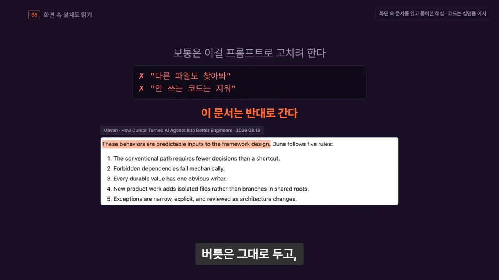
| 규칙(문서 원문) | 뜻 | 해설의 예시 |
|---|---|---|
| 1. The conventional path requires fewer decisions than a shortcut. | 정해진 길이 지름길보다 결정할 게 적어야 한다 | 기능 폴더 안의 파일 이름까지 정해져 있으면(OnboardingApi, OnboardingService) 베낄 패턴이 곧 맞는 패턴 |
| 2. Forbidden dependencies fail mechanically. | 금지된 의존성은 기계적으로 실패해야 한다 | 남의 폴더 안쪽을 가져다 쓰면 CI가 실패 |
| 3. Every durable value has one obvious writer. | 오래 남는 값마다 쓰는 쪽이 하나로 분명해야 한다 | 영상에서는 따로 풀지 않음 |
| 4. New product work adds isolated files rather than branches in shared roots. | 새 기능은 공용 파일에 분기를 넣지 않고 격리된 파일을 더한다 | 공용 라우터에 case를 늘리는 대신 billing 폴더에 파일 하나 추가 |
| 5. Exceptions are narrow, explicit, and reviewed as architecture changes. | 예외는 좁고 명시적이며 아키텍처 변경으로 리뷰한다 | 영상에서는 따로 풀지 않음 |
규칙 2의 예시는 셋째 행동에서 본 그 import예요. 이번에는 빌드가 아니라 CI가 'chat에서 billing.internal로의 의존은 금지'라며 실패시켜요.
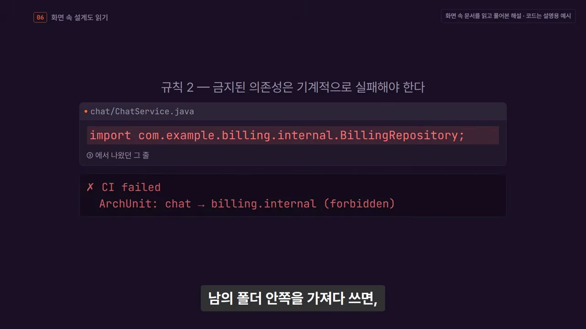
규칙 4는 공용 파일을 건드리지 않게 하는 규칙이에요. 화면 위쪽처럼 공용 라우터의 switch에 case "billing"을 더하면 공용 파일이 계속 길어져요. 대신 아래처럼 billing 폴더에 BillingEntrypoint 파일 하나만 추가하고 나머지는 그대로 둬요.
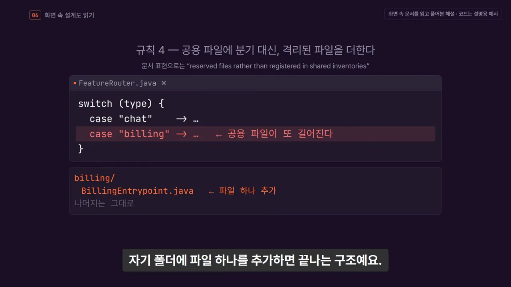
문서에만 있는 얘기가 아니다: Dune의 CI
해설은 이게 문서에만 있는 얘기가 아니라고 정리해요. GrokBot에서는 이 규칙들이 실제로 CI에 들어가 있어요.
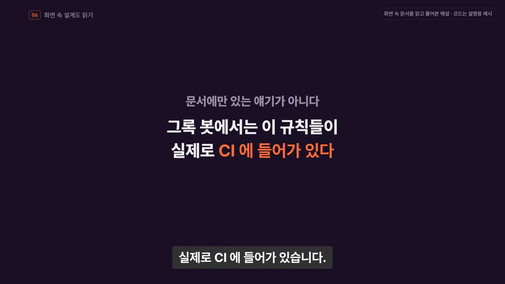
Dune은 GrokBot을 위해 만든 아키텍처의 코드명이에요. 로렌 탄은 '일렉트론 앱을 위한 Next.js'로 생각하면 된다고 해요. 에이전트가 쓰도록 설계했고, 에이전트 기반 앱에 맞춰 만들었어요. 아래 화면은 강의에서 실제로 띄운 그 문서예요. 해설이 읽은 계약과 다섯 규칙이 그대로 보여요.
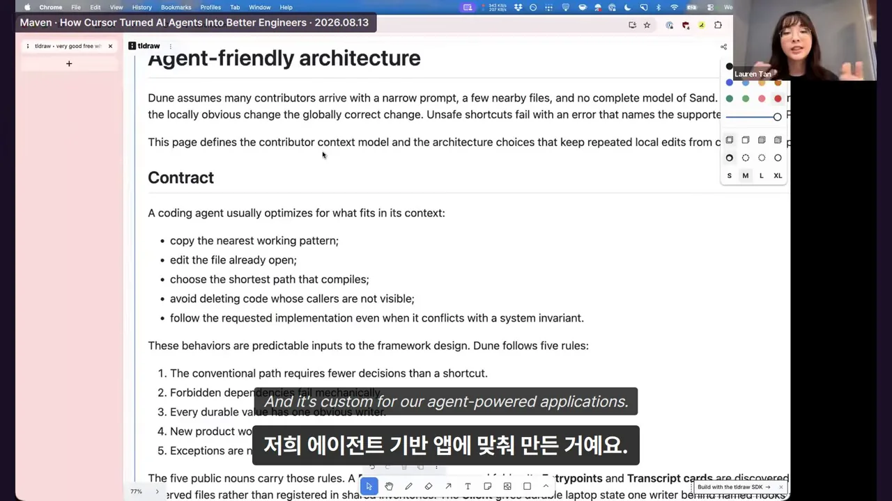
CI는 모든 걸 검사해요. 리액트를 써 봤다면 아는 가장 큰 함정, useEffect를 금지해서 쓰면 CI가 실패해요. 코드 주석도 금지했어요. 에이전트가 쓰는 주석은 99%가 코드와 상관없는 과거 이야기라서예요. 예를 들어 '로렌이 이건 절대 하지 말랬다'가 주석으로 남는데, 그건 전역 규칙이 아니라 '그 PR이 별로니 그 부분을 고쳐'라는 뜻이었어요. 에이전트는 의외로 우리를 잘 이해하지 못한다고 해요.
금지 목록보다 더 센 수단도 있어요. 구조 자체예요. 기능을 만드는 방식이 딱 정해져 있으면, 기존 패턴을 베끼길 좋아하는 에이전트에게는 그게 가장 강한 강제가 돼요. GrokBot에는 feature, entry point, transcript card(채팅에 뜨는 카드) 같은 프레임워크의 명사가 있고, 하나의 feature에 속한 코드는 전부 한 디렉터리에 모여 있어요. 온보딩 기능을 고치면 그 디렉터리에서만 일하면 되고, 일의 80%는 그 안에서 끝나요. 가장 멍청한 에이전트를 기준으로 설계했고, 핵심 원칙은 '가장 짧은 길이 가장 좋은 길'이에요. 에이전트는 지름길을 좋아하니까, 그 지름길을 정답으로 만들면 된다는 거예요.
강제의 다섯 층과 PR 크기
그럼 에이전트가 그 길에서 벗어나면요? 많은 분들이 AGENTS.md에 적어 두는 걸 떠올려요. 그런데 써 보신 분들은 아시듯 에이전트는 잊어버려요. 로렌 탄은 강제하는 수단을 다섯 층으로 나누고, 룰 파일은 그중 세 번째부터예요.
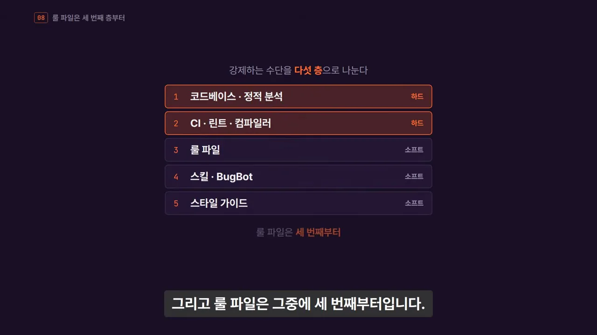
강의 화면에서는 같은 목록을 손글씨로 적어요. 1. codebase, 2. static analysis (lint/compiler/ci), 3. rules/bugbot, 4. skills, 5. "style guide"예요. 해설 화면과 3·4번 칸의 묶음이 조금 달라요. 해설은 BugBot을 스킬과 묶었고, 로렌 탄의 손글씨는 룰과 묶었어요. 로렌 탄은 3~5번을 소프트로 봐요.
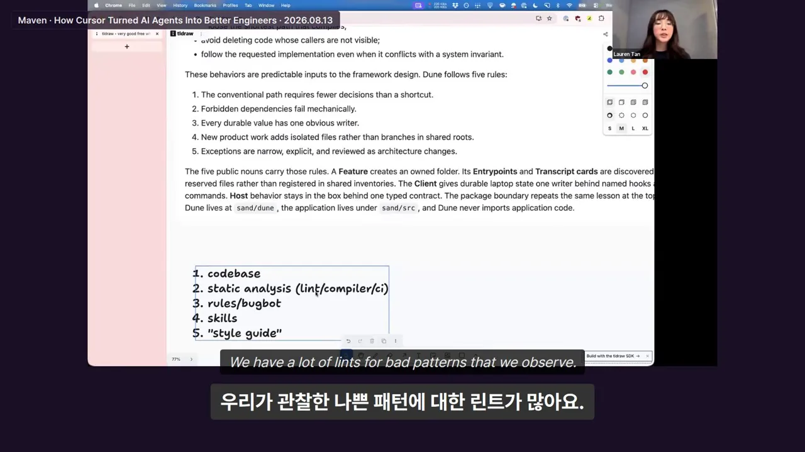
하드와 소프트
| 층 | 무엇 | 강도 | 왜 |
|---|---|---|---|
| 1 | 코드베이스 — 구조, 기능별 디렉터리, 막아 둔 import | 하드 | 에이전트는 기존 패턴을 베끼니, 구조가 곧 규칙이에요 |
| 2 | 정적 분석 — CI 검사, 린트, 컴파일러 진단 | 하드 | CI가 빨갛게 돼서 엉터리 코드는 들어갈 수 없어요 |
| 3 | 룰 파일, BugBot | 소프트 | 에이전트가 잊거나 들쭉날쭉 적용할 수 있어요 |
| 4 | 스킬 | 소프트 | 상동 |
| 5 | 스타일 가이드 | 소프트 | 상동 |
로렌 탄은 층을 겹쳐 쓰되, 소프트 층을 유일한 강제 수단으로 삼지는 않아요. 룰 파일과 BugBot, 스킬, 스타일 가이드만 있으면 시간문제로 코드베이스가 엉망이 된다고 해요. 그래서 하드로 강제할 수 있는 것에 투자하라고 권해요. 기술 스택 선택도 그래서 중요해요. Rust가 다시 인기인 이유도 컴파일러가 아주 많은 걸 강제하기 때문이에요. 빌림 검사기를 통과해야 하고, 에이전트가 unsafe 블록만 쓰지 않으면 컴파일되는 코드는 대체로 잘 돈다고 볼 수 있어요. 사람이 직접 확인하러 갈 필요가 없어지는 거예요.
코드 리뷰 랜드에 갇히지 않기
가장 나쁜 상태는 '코드 리뷰 랜드'에 갇히는 거예요. 코드베이스의 규칙을 사람이 PR을 읽으며 하나하나 지적해서 지키는 상태예요. 로렌 탄은 그럴 때마다 코드 냄새로 여기라고 해요.
Instead of me commenting on the PR, how do I turn this into a hard rule? … Or how do I even categorically eliminate this problem entirely?
PR에 코멘트를 다는 대신 이걸 어떻게 하드 규칙으로 바꿀까? … 아니면 이 문제를 아예 없애 버릴 수는 없을까?
— 원래 강의 (이 영상 30:31 부근)
PR은 얼마나 크게
사람의 리뷰에서 하던 일을 CI가 잡으면, 남는 질문은 PR 자체예요. 에이전트가 올리는 PR은 얼마나 커야 할까요. 정해진 상한은 없고 50줄에서 1,000줄까지 다양해요.
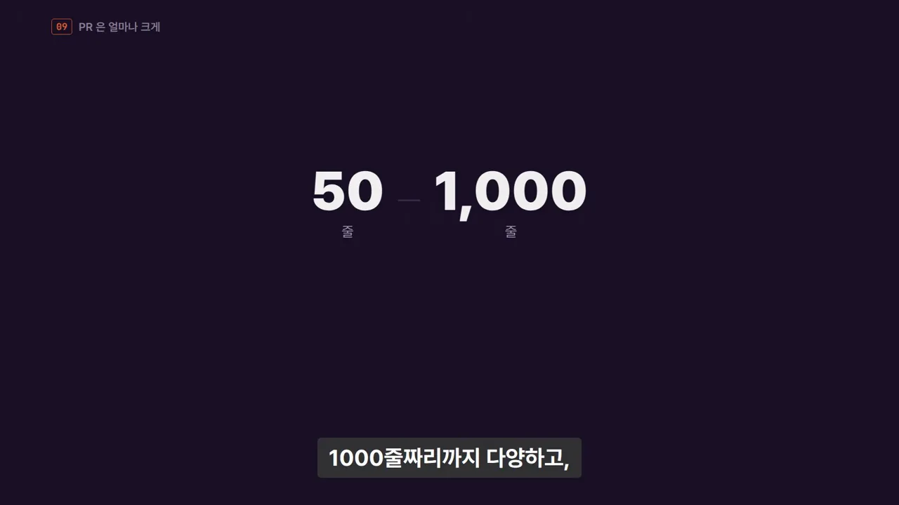
다만 에이전트에게 일을 여러 PR로 나누라고 권해요. 커밋이 워낙 많아진 시대라 더 어렵지만, git 히스토리는 아주 풍부한 맥락이에요. 아래 화면은 실제 작업 하나의 PR 목록이에요. 'composer: remove …', 'recital: delete …'처럼 PR마다 작은 변경 하나가 제목에 드러나요. PR 하나가 작은 변경 하나를 원자적으로 설명하면 되돌리기도 쉽고, 버그가 어디서 들어왔는지도 금방 찾아요. 4만 줄짜리 PR이면 뭐가 들어갔는지 알 수 없어요.
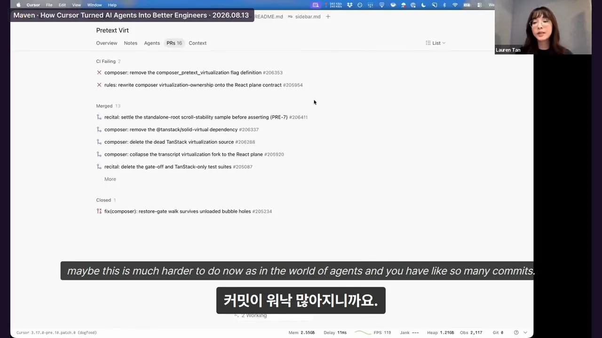
토큰은 ROI의 문제, 그리고 순서
리팩터링에 PR 600개, 여기까지 들으면 드는 생각이 있어요. 이게 다 토큰이에요. 강의에서도 같은 질문이 몇 번 올라왔어요. 토큰이 무제한이 아닌 보통 사람에게도 현실적인 얘기냐는 거예요.
로렌 탄은 자기가 토큰이 무제한인 AI(Artificial Intelligence) 랩에서 일한다는 걸 먼저 인정해요. 그래서 모두가 똑같이 하라고는 못 하지만, 큰돈 안 들이고 여기까지 오는 것도 가능하다고 봐요. 엔지니어링 리더나 스타트업 대표에게는 ROI(Return On Investment)의 문제라고 해요.
- 초반에 코드베이스를 리팩터링하고 제약을 더하는 데 토큰이 많이 들어요.
- 하지만 에이전트가 코드를 다 쓰는 세상으로 간다면 아주 가볍게 가고 싶잖아요. 1만 명짜리 엔지니어링 조직이 되면 계획 같은 오버헤드가 어마어마해요.
- 로렌 탄에게 에이전트의 가치는 모든 작은 일에 토큰을 쓰는 게 아니라, 전에는 못 하던 일을 하게 해 주는 거예요. 혼자서 코드베이스에 이 정도 제약을 거는 건, 에이전트 이전 시대였다면 몇 년이 걸렸을 일이에요.
Do you hire someone to do this or do you spend the tokens to set up a code base so that even … the dumbest agents can do a good job?
이 일을 할 사람을 뽑을까요, 아니면 토큰을 써서 가장 멍청한 에이전트도 제 몫을 하는 코드베이스를 만들까요?
— 원래 강의 (이 영상 34:31 부근)
답은 그대로 받아들이지 않아도, 순서는 가져올 만하다
영상 해설은 이렇게 정리해요. 토큰을 무제한으로 쓰는 회사 사람의 답을 그대로 받아들일 필요는 없지만, 순서는 가져올 만해요. 아래 네 단계가 그 순서이고, 맨 아래 메모대로 사람이 리뷰에서 반복하던 지적은 린트와 CI로 옮겨요.
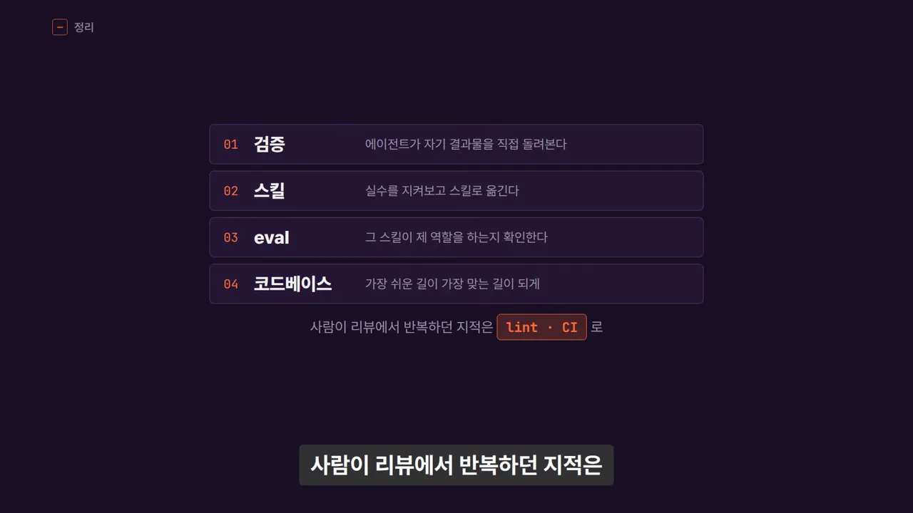
순서를 건너뛰지 말라는 경고도 있어요. 에이전트 하나를 못 믿는 상태에서 백 개를 띄우면 토큰만 나가요. 1절의 신뢰 곡선과 5절의 클라우드 경고가 같은 얘기예요.
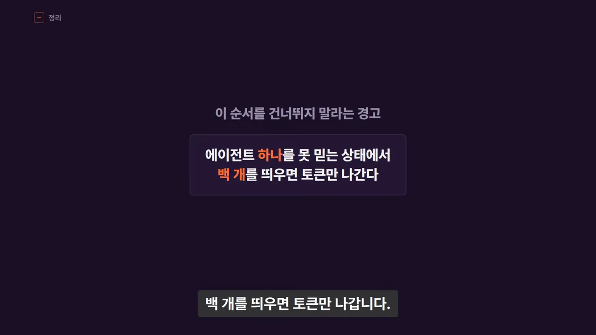
그래서 한 달 PR 1,000개라는 숫자는 에이전트가 빨라졌다는 뜻이 아니에요. 오른쪽 상자대로 사람이 중간에서 빠져도 되는 환경을 만들었다는 뜻이에요.
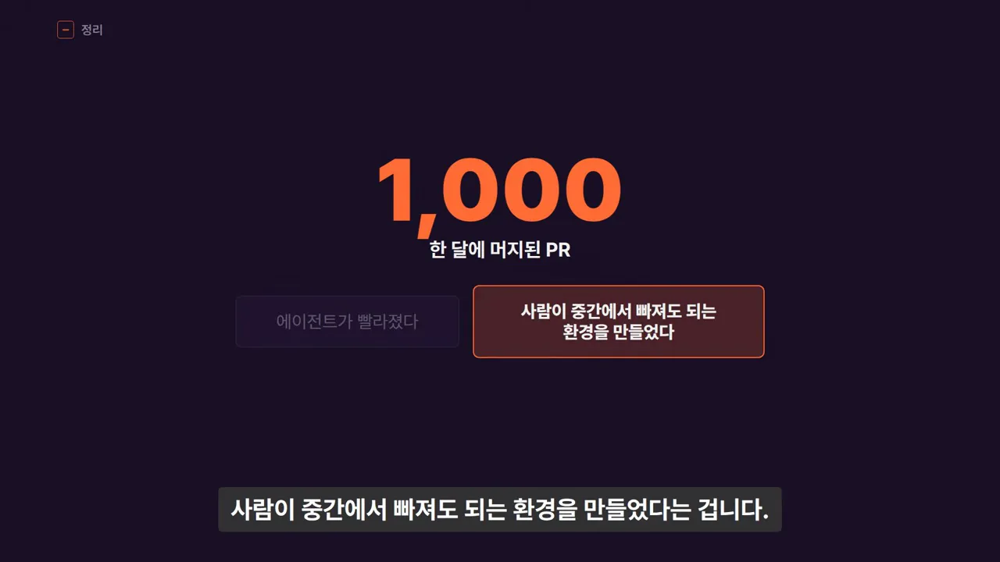
마지막 조언은 하나예요. 에이전트가 자꾸 틀린다면 프롬프트를 한 줄 더 고치기 전에, 에이전트가 일하는 환경에 뭐가 빠져 있는지부터 보라는 거예요.
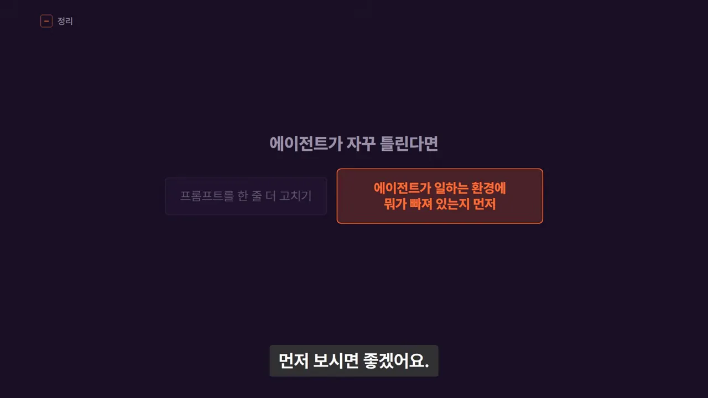